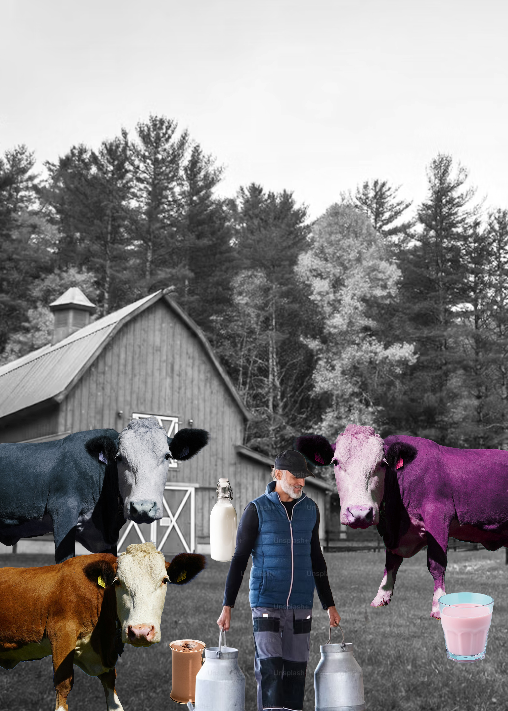
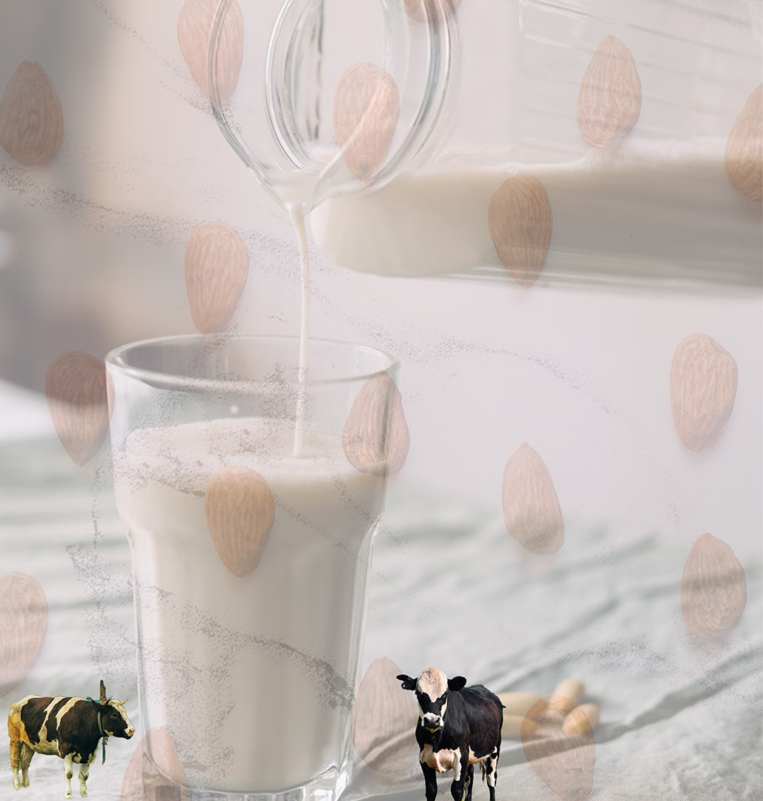

Inspiration from A survey conducted by the Innovation Center for U.S. Dairy in 2017 found that 7% of American adults—roughly 16.4 million people—held the misconception of chocolate milk coming from brown cows. Europe news 2021 where comotions started after population finding out milk comes from cows forcinf The Real Academy to change the meaning of word Milk in vegetable drinks like Almond Milk
 